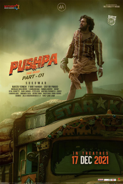

In the late 1990s, Pushpa Raj, a self-esteemed porter, and his friend Kesava resort to logging red sandalwood for notorious smuggler Konda Reddy. Pushpa quickly rises through ranks by saving the stock from being seized by DSP Govindappa and suggesting novel ideas to smuggle the logs bypassing checkpoints. Mangalam Srinu, Konda Reddy's ruthless boss, entrusts him with his consignment and in turn, Konda Reddy tasks Pushpa with safeguarding the consignment from the police and shipping it. Nevertheless, Konda Reddy's lecherous youngest brother Jaali Reddy loathes Pushpa's increasing fame and intentionally sabotages the dispatching of consignment to let the police arrest him but Pushpa manages to save the stock once again. At a party hosted by Srinu, Pushpa discovers that the latter has been double-crossing the syndicate by embezzling the profits obtained through smuggling. He promptly informs Konda Reddy, who refuses to confront Srinu and Pushpa too agrees with him.
Meanwhile, Pushpa develops feelings for Srivalli, a milk vendor and daughter of one of Konda Reddy's henchmen. Their engagement is interrupted by Mohan, Pushpa's eldest half-brother, who refuses to acknowledge Pushpa as his father's son and reveals that he is illegitimate. Pushpa's mother Parvatamma is injured in the ensuing scuffle and her agony moves Pushpa, who decides to earn a name for himself. He withdraws from working for Srinu and strikes a deal with Chennai-based smuggler Murugan, splitting profits with Konda Reddy. Elsewhere, Jaali Reddy captures Srivalli's father upon discovering that he has been working as a mole for Govindappa and threatens her to sleep with him in exchange for sparing his life. She confides in Pushpa and confesses her feelings for him; he promptly retaliates by thrashing Jaali, who gets temporarily paralyzed. He refuses to tell his brothers about Pushpa and vows to seek vengeance himself after recuperating. However, Konda Reddy eavesdrops on a conversation between Pushpa and Kesava and discovers that the former beat Jaali. He takes Pushpa to a secluded location to kill him but they face an ambush by Srinu's brother-in-law Mogileesu and his henchmen; Pushpa subdues them and kills Mogileesu while rescuing Konda Reddy's younger brother Jakka Reddy, reigniting their friendship. However, Konda Reddy dies in the attack. At his funeral, MP Siddhappa Naidu tries to make peace between Pushpa and Srinu but ends up appointing the former to run the syndicate in Srinu's stead, upon being apprised of his fraud.